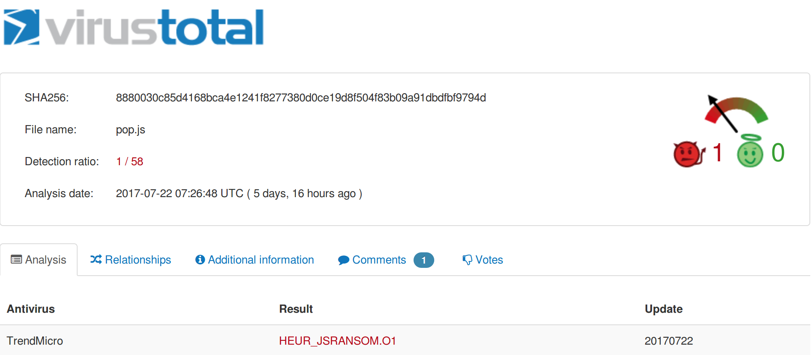

This is my security portfolio. For my general programming portfolio consisting of personal projects and major schoolwork, see here.
Security
CVEs
CVE-2019-3490 in Novell Netstorage
In late 2018 while performing an external penetration test for a client, I discovered a reflected cross-site scripting vulnerability in the web interface to Novell Netstorage. This vulnerability was responsibly disclosed through the CERT Coordination Center.
CVE-2020-9055 XSS in Versiant Lynx
CVE-2020-9056 XSS in Periscope Buyspeed
Tool Releases
Git-Scrapers
Git-Scrapers is an open source tool which collects open source intelligence on developers using metadata stored in git repositories. The tool uses the GitHub and StackOverflow API to collect information. I wrote the tool in Ruby (originally in Python/Perl) as an introduction to the language.
Vampire
Vampire is a Cobalt Strike aggressor script which communicates with Bloodhound through Neo4j API calls. The script partially automates marking users as "owned" in Bloodhound. This functionality is useful because Bloodhound leverages Neo4j to use graphs to visualize the Active Directory environment. By marking users as "owned", you are able to follow your attack path through the graph.
Misc
Conference Trainings Attended
Modern Windows Attack and Defense (Derbycon 2018)
Dark Side Ops: Malware Dev (Derbycon 2019)
Packet Capture Analysis and Incident Report
As part of a job application process, I performed a packet capture analysis of the file in this challenge. When it was given to me, I did not know it was part of a public challenge.
I learned to use several new tools, as the packet capture contains malware samples in many languages. I produced this report and created these files in the course of my work. The zip file uses the password "infected" as it contains malware samples that will be quarantined and deleted by antivirus. The zip also contains source code which I deobfuscated and annotated.

Popunder Script Reverse Engineering
I wrote a blog post here which analyses a popup advertisement script I found on a shady website. My goal was to investigate an iOS bug which was allegedly fixed, but still affects the Brave web browser app. This particular script seems innocent on that charge, but there was still some interesting reverse enineering to be done on it.
Technical Write-up
In early 2016, I applied for an internship at NCC Group, and as part of the selection process, I performed a security assessment of a vulnerable web application. Without using any automated tools, I found bugs of various severity and wrote them up in a professional document. This was a great experience for me, and I encourage all companies to have a similar stage in their hiring process.